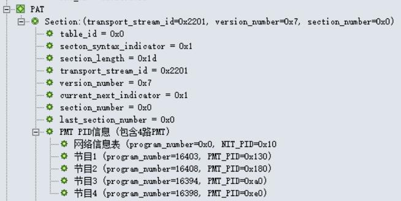
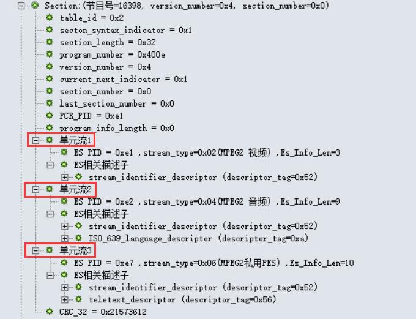
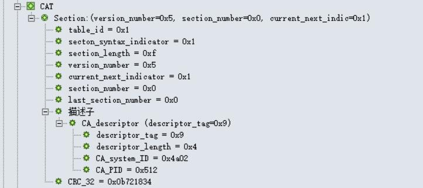
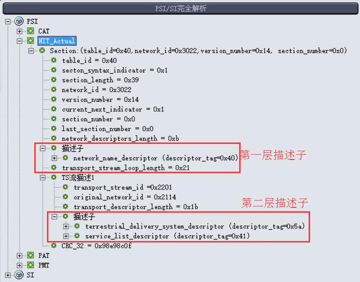

教程目录
PSI/SI教程

如果你是PSI/SI的初学者， 那么就让一切都从这里开始吧...
版权声明：未经许可，请勿转载！
©2016 · OneLib智库 · 挖掘自己的财富
第三章：深入学习PSI
进一步学习PSI信息
在上一章文档中，我们对PAT和PMT表有了初步的了解；在这一章中，我们会更加系统地对PSI信息进行说明。
“PSI是对单一TS流的描述，是TS流中的引导信息”
PSI信息由节目关联表PAT、条件接收表CAT、节目映射表PMT和网络信息表NIT组成，这些表会被插入到TS流中。 PSI信息是对单一TS流的描述，它是TS流的引导信息；PSI信息指定了如何从一个携带多个节目的传输流中找到指定的节目。 下面给出的是节目引导信息（或称节目特定信息，PSI）的四个表结构。
| 结构名 | 中文 | 所定义标准 | PID | 描述 |
| PAT | 节目关联表 | MPEG2标准 | 0x0000 | 将节目号码和节目映射表PID相关联，是获取数据的开始 |
| PMT | 节目映射表 | MPEG2标准 | PAT中标识 | 指定一个或多个节目的PID |
| CAT | 条件接收表 | MPEG2标准 | 0x0001 | 将一个或多个专用EMM流分别与唯一的PID相关联 |
| NIT | 网络信息表 | SI标准 | PAT中标识 | 描述整个网络，如多少个TS流、频点和调制方式等信息 |
PAT表
Program Association Table
"PAT是机顶盒接收的入口点，是它获取数据的开始"
节目关联表PAT的意义在于，它描述了当前TS流中包含了哪些PID； 只有根据获得的PID，用户才可以以此作为凭据找出其他表（如PMT表）及其信息。 所以 PAT是机顶盒接收的入口点，是它获取数据的开始； 要保证一个TS流能被正常接收，则至少要有一个完整有效的PAT。
PAT表的结构分析
PAT表主要提供Program和PID之间的对应关系。
PID = 0x0000
table_id = 0x00
下表是PAT结构：
| Syntax(句法结构) | No. of bits(所占位数) | Identifier(识别符) | Note(注释) |
| program_association_section(){ | |||
| table_id | 8 | uimsbf | 表标识符 |
| Section_syntax_indicator | 1 | bslbf | 段语法指示符，通常设置为“1” |
| "0" | 1 | bslbf | zero |
| Reserved | 2 | bslbf | 保留 |
| Section_length | 12 | uimsbf | 注释 |
| transport_stream_id | 16 | uimsbf | 注释 |
| Reserved | 2 | bslbf | 保留 |
| Version_number | 5 | uimsbf | 注释 |
| Current_next_indicator | 1 | bslbf | 注释 |
| Section_number | 8 | uimsbf | 注释 |
| last_section_number | 8 | uimsbf | 注释 |
| for(i=0;i<N;i++){ | |||
| program_number | 16 | uimsbf | 注释 |
| reserved | 3 | bslbf | 保留 |
| if(program_number == 0){ | |||
| network_PID | 13 | uimsbf | 注释 |
| } | |||
| else{ | |||
| program_map_PID | 13 | uimsbf | 注释 |
| } | |||
| } | |||
| CRC_32 | 32 | rpchof | 注释 |
| } | |||
这里我们注意关注五个字段：
- table_id：PAT的table_id应为0x00
- transport_stream_id（传输流标志）：用以标识来源于网络中任何其他复合流的TS流
- program_number（节目号）：规定program_map_PID可适用的节目。当值为0x0000时，其后的PID参照将是网络PID。它可以作为一个指示符号，例如用于广播通道。
- network_PID（网络PID）：仅当program_number为0x00时使用
- program_map_PID（节目映射PID）：据此找出相应的PMT表
PAT表实例
在下图中，我们可以看到PAT表携带的基本信息。
PAT表一览首先，table_id=0x0。网络信息表的PID为0x10。网络中有四路节目，并给出了每个节目的program_number以及每个节目的PMT PID。 在解析完PAT表后，就可以根据这里得到的四个PMT PID去过滤对应PID号的PMT表，从而得到每个节目的更详细信息。
PMT表
Program Map Table
"PMT是连接节目号与节目元素的桥梁"
节目映射表PMT的意义在于，它给出了节目号与组成这个节目元素之间的映射； 也就是说，PMT是连接节目号与节目元素的桥梁。 我们知道，一个电视节目至少包含了视频和音频数据，而每一个节目的视音频数据都是以包的形式在TS流中传输的； 所以说，一个TS流包含了多个节目的视频和音频数据包。 要想过滤出一个TS流中其中一个节目的视频和音频，则需要知道这个节目中视频和音频的标识号PID。 PMT表的作用就在于，它提供了每个节目视频、音频（或其他）数据包的PID。
PMT表的结构分析
PMT表主要提供节目numbers和节目elements之间的映射关系。
PID = 值由编码器选择
table_id = 0x02
下表是PMT结构：
| Syntax(句法结构) | No. of bits(所占位数) | Identifier(识别符) | Note(注释) |
| program_map_section(){ | |||
| table_id | 8 | uimsbf | 表标识符 |
| Section_syntax_indicator | 1 | bslbf | 段语法指示符，通常设置为“1” |
| "0" | 1 | bslbf | zero |
| Reserved | 2 | bslbf | 保留 |
| Section_length | 12 | uimsbf | 注释 |
| program_number | 16 | uimsbf | 节目号，与service_id对应 |
| Reserved | 2 | bslbf | 保留 |
| Version_number | 5 | bslbf | 注释 |
| Current_next_indicator | 1 | bslbf | 注释 |
| Section_number | 8 | uimsbf | 注释 |
| last_section_number | 8 | uimsbf | 注释 |
| reserved | 3 | bslbf | 保留 |
| PCR_PID | 13 | uimsbf | 注释 |
| reserved | 4 | bslbf | 保留 |
| program_info_length | 12 | uimsbf | 头两位为“00” |
| for(i=0;i<N;i++){ | |||
| descriptor() | |||
| } | |||
| for(i=0;i<N1;i++){ | |||
| stream_type | 8 | uimsbf | 注释 |
| reserved | 3 | bslbf | 保留 |
| elementary_PID | 13 | uimsbf | 注释 |
| reserved | 4 | bslbf | 保留 |
| ES_info_length | 12 | uimsbf | 头两位为"00" |
| for(i=0;i<N2;i++){ | |||
| descriptor() | |||
| } | |||
| } | |||
| CRC_32 | 32 | rpchof | 注释 |
| } | |||
注意到，PMT表中有两个地方有Descriptor():
- Mosaic descriptor：查看！！
- Service move descriptor：查看！！
- Stream identifier descriptor：查看！！
- Teletext descriptor：查看！！
PMT表实例
在下图中，我们可以看到PMT表携带的基本信息。一共有四个section，是四张PMT表的信息；其中，每个section存储在一个PMT表中，对应了一个节目的信息。 下面，我们以节目号为16398的节目为例进行分析。
PMT表一览下图可以看到，一共有3个单元流，每一个单元流都是组成这个节目的一个 元素(或者说是分量)。 可以看到，这个节目包含一个MPEG2的视频(stream_type=0x02)、一个MPEG2的音频(stream_type=0x04)以及一个私有类型(stream_type=0x06)的数据。
节目号为16398的节目下表是stream_type值的规定：
| stream_type | 描述 |
| 0x00 | ITU-T | ISO/IEC Reserved，国际标准保留 |
| 0x01 | ISO/IEC 11172 Video，视频 |
| 0x02 | ITU-T Rec. H.262 | ISO/IEC 13818-2 Video or ISO/IEC 11172-2 constrained parameter video stream，视频或受限参数视频流 |
| 0x03 | ISO/IEC 11172 Audio，音频 |
| 0x04 | ISO/IEC 13818-3 Audio，音频 |
| 0x05 | ITU-T Rec. H.222.0 | ISO/IEC 13818-1 private_sections |
| 0x06 | ITU-T Rec. H.222.0 | ISO/IEC 13818-1 PES packets containing private data,包含专用数据的PES分组 |
| 0x07 | ISO/IEC 13522 MHEG |
| 0x08 | ITU-T Rec. H.222.0 | ISO/IEC 13818-1 Annex A DSM CC |
| 0x09 | ITU-T Rec.H.222.1 |
| 0x0A | ISO/IEC 13818-6 type A |
| 0x0B | ISO/IEC 13818-6 type B |
| 0x0C | ISO/IEC 13818-6 type C |
| 0x0D | ISO/IEC 13818-6 type D |
| 0x0E | ISO/IEC 13818-1 auxiliary |
| 0x0F - 0x7F | ITU-T Rec. H.222.0 | ISO/IEC 13818-1 Reserved，GB/T保留 |
| 0x80 - 0xFF | User Private，用户专用 |
该节目的单元流2是音频分量的信息，可以看出，该音频语言为“deu”，即德语；其audio_type=0x1。 单元流3是Teletext分类，其语言编码也是“deu”，teletext_type=0x1。下面给出了teletext_type值的规定：
| teletext_type | 描述 |
| 0x00 | 保留 |
| 0x01 | initial Teletext page |
| 0x02 | Teletext subtitle page |
| 0x03 | additional information page |
| 0x04 | programme schedule page |
| 0x05 | Teletext subtitle page for hearing impaired people，听障人士Teletext字幕 |
| 0x06 - 0x1F | 保留 |
CAT表
Program Map Table
"CAT描述了节目的加密方式"
条件接收表CAT描述了节目的加密方式，它包含了节目的 EMM 识别PID。 它给出了一个或多个CA系统、EMM流以及与CA相关的特定参数之间的关系。
CA描述符既用于规定像EMM这样的系统范围条件接收管理信息，也用于规定像ECM这样的基本流特定信息。
- 如果一个基本流（Elementary Stream）是加扰的，那么包含该基本流的节目信息PMT中需要一个CA描述符
- 如果一个TS流中有任何一个系统范围的条件接收管理信息，则条件接收表中应有CA描述符。
CAT表的结构分析
CAT表主要提供关于Bouquet的信息，Bouquet是一个services的集合。
PID = 0x0001
table_id = 0x01
下表是CAT结构：
| Syntax(句法结构) | No. of bits(所占位数) | Identifier(识别符) | Note(注释) |
| conditional_access_section(){ | |||
| table_id | 8 | uimsbf | 表标识符 |
| Section_syntax_indicator | 1 | bslbf | 段语法指示符，通常设置为“1” |
| "0" | 1 | bslbf | zero |
| Reserved | 2 | bslbf | 保留 |
| Section_length | 12 | uimsbf | 注释 |
| Reserved | 18 | bslbf | 保留 |
| Version_number | 5 | uimsbf | 注释 |
| Current_next_indicator | 1 | bslbf | 注释 |
| Section_number | 8 | uimsbf | 注释 |
| last_section_number | 8 | uimsbf | 注释 |
| for(i=0;i<N;i++){ | |||
| descriptor() | |||
| } | |||
| CRC_32 | 32 | rpchof | 注释 |
| } | |||
注意到，CAT表中的Descriptor():
- CA identifier descriptor：查看！！
CAT表实例
下图是一个CAT表的实例：
CAT表一览NIT表
Network Information Table
"NIT描述了数字电视网络中与网络相关的信息"
NIT描述了数字电视网络中与网络相关的信息，但这个表本身的信息有限，更多的信息是依靠插入表中的描述符来提供的。 NIT常用的描述符有：网络名称描述符（network_name_descriptor）、有线传送系统（cable_delivery_system_descriptor）、业务列表描述符（service_list_descriptor）和链接描述符（linkage_descriptor）。
NIT表的结构分析
NIT表主要提供物理网络本身的一些信息。
PID = 0x0010
table_id：
- discribe actual newwork = 0x40
- discribe not actual newwork = 0x41
网络信息表（NIT）传递了与通过一个给定的网络传输的复用流/TS流的物理结构相关的信息，以及与网络自身特性相关的信息。下表是NIT结构：
| Syntax(句法结构) | No. of bits(所占位数) | Identifier(识别符) | Note(注释) |
| network_information_section(){ | |||
| table_id | 8 | uimsbf | 表标识符 |
| Section_syntax_indicator | 1 | bslbf | 段语法指示符，通常设置为"1" |
| Reserved_future_use | 1 | bslbf | 预留使用 |
| Reserved | 2 | bslbf | 保留 |
| Section_length | 12 | uimsbf | 注释 |
| Network_id | 16 | uimsbf | 注释 |
| Reserved | 2 | bslbf | 保留 |
| Version_number | 5 | uimsbf | 注释 |
| Current_next_indicator | 1 | bslbf | 注释 |
| Section_number | 8 | uimsbf | 注释 |
| last_section_number | 8 | uimsbf | 注释 |
| Reserved_future_use | 4 | bslbf | 预留使用 |
| Network_descriptors_length | 12 | uimsbf | 网络描述符长度 |
| for(i=0;i<N;i++){ | |||
| descriptor() | First descriptor loop | ||
| } | |||
| reserved_future_use | 4 | bslbf | - |
| transport_stream_loop_length | 12 | uimsbf | 传输流循环长度 |
| for(i=0;i<N;i++){ | |||
| transport_stream_id | 16 | uimsbf | 注释 |
| original_network_id | 16 | uimsbf | 注释 |
| reserved_future_use | 4 | bslbf | 预留使用 |
| transport_descriptors_length | 12 | uimsbf | 传输流描述符长度 |
| for(i=0;i<N;i++){ | |||
| descriptor() | Second descriptor loop | ||
| } | |||
| } | |||
| CRC_32 | 32 | rpchof | 注释 |
| } | |||
NIT表中的描述子
注意到NIT结构里出现了两个循环，分别成为第一层循环和第二层循环； 每层循环都插入了一个描述符，也就是一共插入了两个描述符。 这两个描述符的特点如下：
| 第一层描述符 | 作用域是针对整个网络的，如插入网络名称描述符、链接描述符等 |
| 第二层描述符 | 作用域是第一层循环所代表的一个TS流，如插入有线传输系统描述符 |
NIT表各层的Descriptor()包括:
-
第一层(First descriptor loop)
- Linkage descriptor：查看！！
- Multiligual network name descriptor：查看！！
- Network name descriptor：查看！！
-
第二层(Second descriptor loop)
- Delivery system descriptor：查看！！
- Service list descriptor：查看！！
- Frequency list descriptor：查看！！
-
在SI标准中规定：original_network_id和transport_stream_id两个标识符相结合唯一确定了网络中的TS流。
各网络被分配独立的network_id值作为网络的唯一识别码。
当NIT表在生成TS流的网络上传输时，network_id和original_network_id将取同一值。
此外，NIT表还有如下特点：
- NIT表被切分为网络信息段（network_information_section）
- 任何NIT的段都必须由PID为0x0010的TS包传输
- 现行网络的NIT表任何段的table_id值应为0x40，且具有相同的table_id_extension即（network_id）；
- 现行网络以外的其他网络NIT表的段table_id值应为0x41
NIT表实例
在下图中，我们可以看到NIT表的各个信息，如table_id=0x40、network_id=0x3022、NIT版本号(version_number=0x14)等。 另外，这里也出现了两层共三个描述子，接下来，我们逐个点开描述子来查看相关信息。
NIT表一览
第一层描述子：network_name_descriptor
下图是第一层的network_name_descriptor描述子。其descriptor_tag=0x40，网络名称(network name)为“T-Systems”。
第二层描述子1：地面传输系统描述子terrestrial_delivery_system_descriptor
下图是第二层的第一个描述子terrestrial_delivery_system_descriptor。
可以看到，该网络的中心频点(center_frequency)为746MHz，带宽为8MHz。
注意，这个位置的描述子分为cable、satellite和terrestrial三种，长度都为13个字节，这使他们之间的转换变得方便；
而此案例中，判断描述子是terrestrial的原因，是descriptor_tag的值是0x5a。
descriptor_tag的值与描述子类型的对应关系如下：
| descriptor_tag | 描述子类型 | 说明 |
| 0x43 | satellite_delivery_system_descriptor | 卫星传输系统描述子 |
| 0x44 | cable_delivery_system_descriptor | 有线传输系统描述子 |
| 0x5a | terrestrial_delivery_system_descriptor | 地面传输系统描述子 |
 第二层1：terrestrial_delivery_system_descriptor描述子
第二层1：terrestrial_delivery_system_descriptor描述子
第二层描述子2：有线传输系统描述子： cable_delivery_system_descriptor
下图是另一个码流的NIT表，该描述子的descriptor_tag=0x44，即有线传输系统（有线电视），所以其携带的传输系统描述子是cable_delivery_system_descriptor。
从图中可以看出，该有线电视网络的主频点是259MHz，符码率为6876M，调制方式为64QAM。
需要说明的是，这里的64QAM并不是直接给出的，而是按照下表的规定(Modulation scheme for cable)发出的代码：
| 调制方式（十六进制） | 描述 |
| 0x00 | 未定义 |
| 0x01 | 16 QAM |
| 0x02 | 32 QAM |
| 0x03 | 64 QAM |
| 0x04 | 128 QAM |
| 0x05 | 256 QAM |
| 0x06 - 0xFF | 预留使用 |
第二层描述子3：卫星传输系统描述子： satellite_delivery_system_descriptor
下图是另一个码流的NIT表，该描述子的descriptor_tag=0x43，即卫星传输系统，所以其携带的传输系统描述子是satellite_delivery_system_descriptor。
从图中可以看出，该频点的信息为11554/H/29950。具体分析可参考该描述子专项说明：查看！！
 satellite_delivery_system_descriptor，卫星传输系统描述子
satellite_delivery_system_descriptor，卫星传输系统描述子
第二层描述子4：业务列表描述子： service_list_descriptor
下图是第二层的第二个描述子service_list_descriptor(业务列表)。它给出了业务根据其id和type排序的一种方式。
从图中可以看到，该网络的有四个业务，且四个业务均为数字电视业务。
其节目号(service_id)分别为16403、16408、16394和16398。
这里要特别说明的是，service_id 与 PMT表里的program_number相对应（service_type = 0x04 (NVOD reference service)除外）。
上面描述子中，有一个service_type字段，它的值可参照下表Service type coding：
| service_type | 说明(中文) | 说明(英文) |
| 0x00 | 预留使用 | reserved for future use |
| 0x01 | 数字电视业务 | digital television service |
| 0x02 | 数字音频广播业务 | digital radio sound service |
| 0x03 | 图文电视业务 | Teletext service |
| 0x04 | NVOD参考业务 | NVOD reference service |
| 0x05 | NVOD时移业务 | NVOD time-shifted service |
| 0x06 | 马赛克业务 | mosaic service |
| 0x07 | PAL制编码信号 | reserved for future use |
| 0x08 | SECAM制编码信号 | reserved for future use |
| 0x09 | D/D2-MAC | reserved for future use |
| 0x0A | 调频广播 | advanced codec digital radio sound servic |
| 0x0B | NTSC制信号 | advanced codec mosaic service |
| 0x0C | 数据广播业务 | data broadcast service |
| 0x0D | 公共接口使用预留 | reserved for Common Interface Usage (EN 50221 [39]) |
| 0x0E | RCS映射 | RCS Map (see EN 301 790 [7]) |
| 0x0F | RCS FLS | RCS FLS (see EN 301 790 [7])，RCS FLS |
| 0x10 | DVB MHP业务 | DVB MHP service |
| 0x11 | 预留使用 | MPEG-2 HD digital television service |
| 0x12 - 0x15 | 预留使用 | reserved for future use |
| 0x16 | 预留使用 | advanced codec SD digital television service |
| 0x17 | 预留使用 | advanced codec SD NVOD time-shifted service |
| 0x18 | 预留使用 | advanced codec SD NVOD reference service |
| 0x19 | 预留使用 | advanced codec HD digital television service |
| 0x1A | 预留使用 | advanced codec HD NVOD time-shifted service |
| 0x1A | 预留使用 | advanced codec HD NVOD reference service |
| 0x1C - 0x7F | 预留使用 | reserved for future use |
| 0x80 - 0xFE | 用户定义 | user defined |
| 0xFF | 预留使用 | reserved for future use |
|
NOTE 1: MPEG-2 SD material should use this type NOTE 2: digital radio sound service | ||
本章小结
Summary
本章通过对PSI各表结构的解析，逐步讲解了PAT表、PMT表、CAT表和NIT表的整体结构，并对各表里出现的描述子(Descriptor)进行了简单的说明。 由于本教程的目的只是讲解PSI各表、让新手们能有一个形象的概念， 在本章里我没有简单粗暴地照搬PSI规范，而是以一条主线的形式从PAT表入手、逐步进入其他表，同时增加了很多实例分析，因此会忽略一些内容(如具体的描述子结构和功能说明)； 这只是一种学习的策略，希望新手们从整体结构入手，不要死盯着某一个细节不放。 如果要查看更详细的信息，可进入 资料快查 来查看你需要的信息。
参考文档
References
| # | 文档名称 | 作者 |
| 1 | 《1.从TS流到PAT和PMT》 | 林晓州 |
| 2 | 《2.PSI/SI深入学习1——预备知识》 | 林晓州 |
| 3 | 《2.PSI/SI深入学习2——PSI信息解析(PAT,PMT,CAT) 》 | 林晓州 |
| 4 | 《2.PSI/SI深入学习3——SI信息解析1(NIT,BAT) 》 | 林晓州 |
| 5 | 《En300468.V1.7.1_Specification for SI in DVB Systems.pdf》 | European Standard |
| 6 | DVB和MPEG-II中的表格 | 网络 |
版本信息
Version Information
| # | 发布日期 | 版本 | 更新内容 | 作者 | 审核 |
| 1 | 2013年10月24日 | V1.0 | 文档《2.PSI/SI深入学习2——PSI信息解析(PAT,PMT,CAT) 》 | 林晓州 | —— |
| 2 | 2016年02月19日 | V2.0 | 整合了多个文档资料，对PSI/SI学习所需的知识进行系统的总结。 | 林晓州 | —— |
| 3 | 2016年02月22日 | V2.1 | 添加参考文档信息。 | 林晓州 | —— |
| 4 | 2016年02月22日 | V2.2 | 完善NIT表的内容：优化描述子的排版和描述，添加NIT表实例分析 | 林晓州 | —— |
| 5 | 2016年02月22日 | V2.3 | 添加PAT表、PMT表和CAT表实例分析 | 林晓州 | —— |
| 6 | ???? | V2.4 | 添加描述子链接 | 林晓州 | —— |